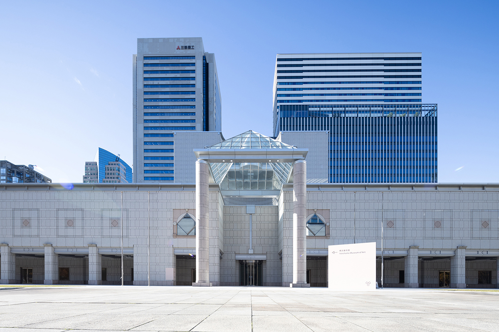
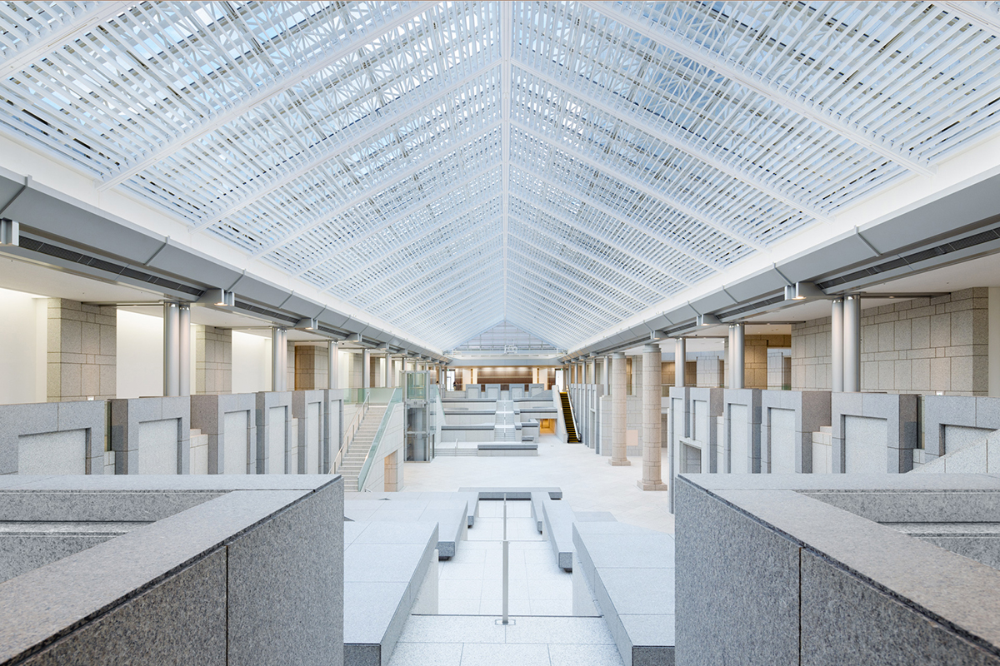
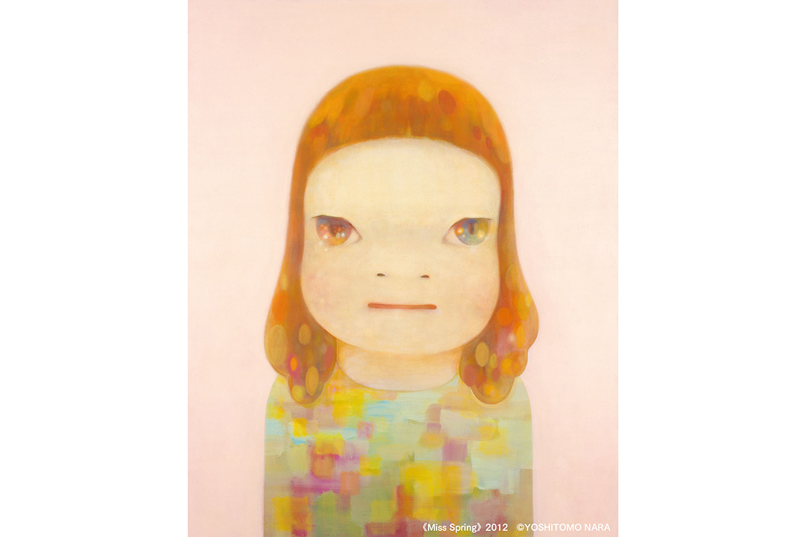
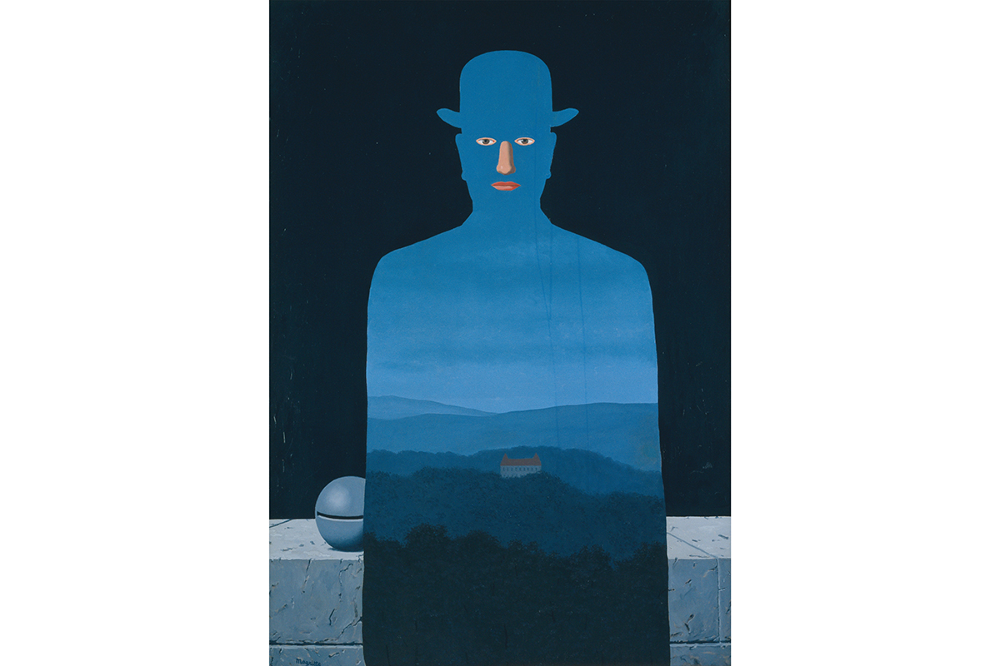

Префектура Канагава · Ёкогама · искусство
Художественный музей Ёкогамы: портовый музей Кэндзо Тангэ снова открыт целиком

Почти три года Художественный музей Ёкогамы был закрыт на капитальный ремонт. 8 февраля 2025 года он впервые за четыре года открыл все свои залы и встретил гостей выставкой из собственной коллекции.
Музей
Четыре года спустя
В районе Минато Мирай в Ёкогаме, среди высотных башен и зелени парка Гранд Молл, стоит Художественный музей Ёкогамы. Почти три года он был закрыт на большой ремонт.
Впервые после перерыва музей открылся в 2024 году для 8-й Ёкогамской триеннале. Потом он снова закрылся, чтобы привести в порядок коллекцию, в ноябре 2024 года открыл часть залов, а 8 февраля 2025 года заработал целиком.

Главное пространство музея, Гранд-галерею, спроектировал Кэндзо Тангэ. После ремонта этот огромный зал превратился в «Свободную зону», открытую и не связанную строгим маршрутом. Появились новые залы «Галерея 8» и «Галерея 9», библиотека по искусству, музейный магазин и кафе. Задумка в том, чтобы здесь нашлось место для любого посетителя.
Девиз музея звучит как «Гавань открывается». Музей хочет стать похожим на порт: местом, где встречаются разные культуры и взгляды.
Выставка
«С возвращением, Ёкогама»
В честь открытия с 8 февраля по 2 июня 2025 года шла выставка «С возвращением, Ёкогама». Её подготовила сама директор музея: известные работы из собственной коллекции показали под новым углом, через историю города. Билет для взрослых стоил 1800 иен в 2025 году.


В залах висели Сезанн, Пикассо, Магритт и Ёситомо Нара, рядом с ними современное искусство: живопись, фотография, ремесло, видео и архивные материалы. Для детей устроили отдельный уголок «Глазами ребёнка»: работы для него отобраны специально и развешаны так, чтобы маленьким зрителям было удобно смотреть. Ключевое слово обновлённого музея это «разнообразие», и на этой выставке история Ёкогамы открывалась с неожиданной стороны.
Художественный музей Ёкогамы
- Адрес
- префектура Канагава, Ёкогама, район Ниси, Минато Мирай, 3-4-1
- Телефон
- +81 45-221-0300
- Часы работы
- 10:00–18:00 (вход до 17:30)
- Выходные
- четверг, новогодние праздники; зависит от выставки
Фото: Кэнсю Синцубо.